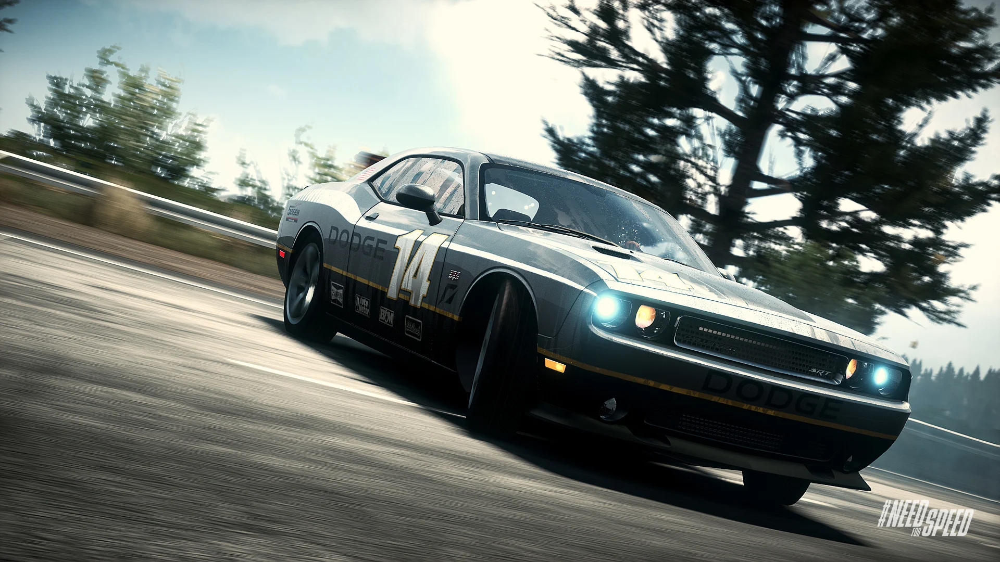
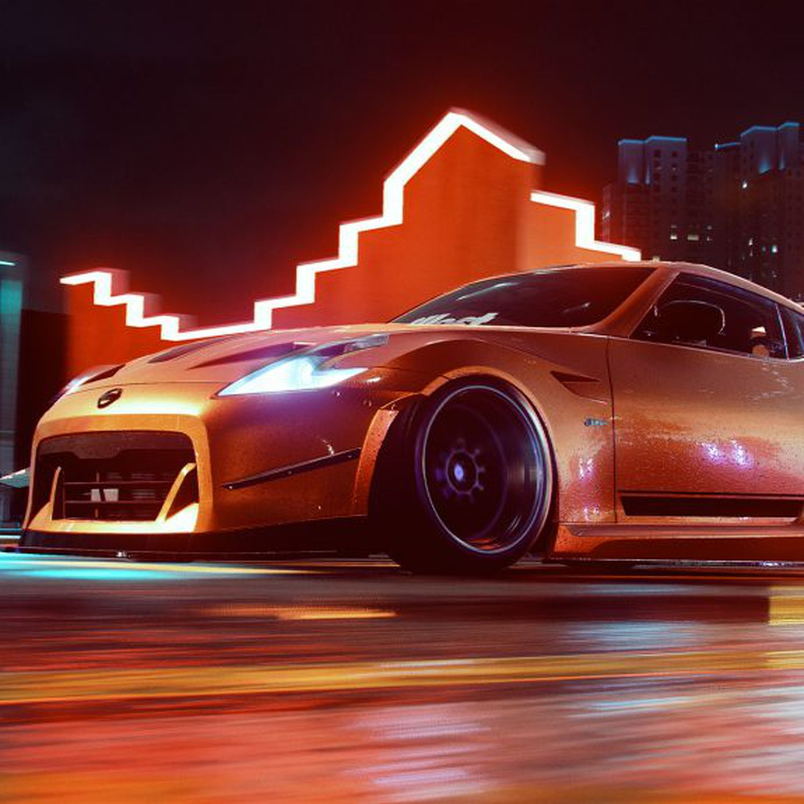

Need for Speed
Need for Speed (NFS) este o franciză de jocuri video de curse publicată de Electronic Arts și dezvoltată în prezent de Criterion Games, dezvoltatorii Burnout. Seria se concentrează în jurul curselor de stradă ilicite și, în general, încredințează jucătorilor să finalizeze diferite tipuri de curse, evitând în același timp forțele de ordine locale în urmăririle poliției. Seria a lansat primul său titlu, The Need for Speed, în 1994. Cel mai recent joc, Need for Speed: Hot Pursuit Remastered, a fost lansat pe 6 noiembrie 2020.
Seria a fost supravegheată și a avut jocuri dezvoltate de mai multe echipe notabile de-a lungul anilor, inclusiv EA Canada, EA Black Box, Slightly Mad Studios și Ghost Games. Franciza a fost bine primită din punct de vedere critic și este una dintre cele mai de succes francize de jocuri video din toate timpurile, vândând peste 150 de milioane de copii ale jocurilor. Datorită vânzărilor sale puternice, franciza s-a extins în alte forme de suport media, inclusiv o adaptare la film și jucării cu licență Hot Wheels.
Seria Need for Speed a fost inițial dezvoltată de Distinctive Software, un studio de jocuri video cu sediul în Vancouver, Columbia Britanică, Canada. Înainte de achiziționarea companiei de către Electronic Arts în 1991, aceasta a creat jocuri de curse populare precum Stunts și Test Drive II: The Duel. După achiziție, compania a fost redenumită Electronic Arts (EA) Canada. Compania și-a valorificat experiența în domeniu dezvoltând seria Need for Speed la sfârșitul anului 1992.
EA Canada a continuat să dezvolte și să extindă franciza Need for Speed până în 2002, când un alt dezvoltator cu sediul în Vancouver, numit Black Box Games, a fost achiziționat de EA și a fost contractat pentru continuarea seriei cu Need for Speed: Hot Pursuit 2.


Mai târziu, Slightly Mad Studios a fost introdus, lansând Need for Speed: Shift în 2009, urmat de o continuare, Shift 2: Unleashed, în 2011. Compania din Marea Britanie Criterion Games va lansa Hot Pursuit în 2010. Jocul a introdus o platformă socială , intitulat Autolog, care permite jucătorilor să urmărească progresul jocului, să vadă clasamentele, să partajeze capturi de ecran cu prietenii, printre alte caracteristici.
La E3 2012, vicepreședintele Criterion Games, Alex Ward, a anunțat că dezvoltatorii aleatori nu vor mai dezvolta titluri NFS. Ward nu a confirmat că toate jocurile Need for Speed din viitor vor fi dezvoltate în întregime de Criterion, dar a spus că studioul va avea o "implicare puternică" în ele și va avea controlul asupra titlurilor NFS care vor fi lansate în viitor.
În august 2013, ca urmare a reducerii dimensiunii Criterion Games, dezvoltatorul suedez Ghost Games va deveni principalul studio pentru franciză și va supraveghea dezvoltarea viitoare. La acea vreme, 80% din forța de muncă a Ghost Games era formată din foști angajați ai Criterion Games. Jocurile Ghost vor dezvolta Need for Speed Rivals din 2013, rebootul Need for Speed din 2015, Need for Speed Payback din 2017 și Need for Speed Heat din 2019. În februarie 2020, Criterion a recâștigat supravegherea francizei.
 